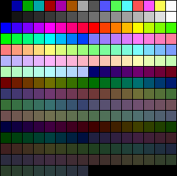
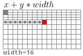

はじめに
ようこそ
待って、何？もうグラフィック？そうなんです、これからOSの超カッコイイGUIを開発するんです!:)そうではありませんが、その方向でスタートします。
この章は、グラフィックス・プログラミングを扱うミニシリーズの最初の章です。Vesa VBE、Video BIOS、そしてVGAのための直接的なハードウェアプログラミング、さらにSVGAのコンセプトもカバーする予定です。また、2Dベクターレンダリングや画像を含むグラフィックの概念やレンダリングについても取り上げる予定です。もしかしたら、もう少し後に3Dも扱うかもしれません。
楽しみですか？OS開発シリーズからスピンオフしたこのミニシリーズには、たくさんのクールな素材が登場します！しかし、コンピュータグラフィックスの素晴らしい世界に飛び込む前に、基本ルールを決めておく必要があります。コンピュータグラフィックスには、さまざまな方法と方向性があります。コンピュータグラフィックスというのは複雑なテーマです。1つの章ではカバーしきれません。しかし、それは可能です。ただ、1章ではとてもとても長い章になってしまいます。
このため、段階的に説明することにしました。最初の章では、リアルモードまたはv86モードでグラフィックスを扱うことをカバーします。第2章では、Video BIOS Extensions (VBE)とSuper VGAを取り上げます。第3章は、グラフィックスパイプラインの直接ハードウェアプログラミングをカバーする、より小さなミニシリーズの最初の章となります。VGAとSuper VGAのトピックもあります。
この章では、リアルモードビデオBIOSを使用したリアルモードグラフィックスを扱うことから始めましょう...
基本概念
概要
コンピュータグラフィックス(CG)について説明する必要はないでしょう。CGは、コンピュータ、アニメーション、ビデオゲームなどの業界に革命を起こしました。コンピュータ・グラフィックスの分野は、コンピュータ・ディスプレイ上でグラフィック効果を生み出す能力の開発、創造、継続を包括している。 1Dグラフィックスから、2D、3D、そして4Dグラフィックス・シミュレーション・ソフトウェアまである。
歴史
コンピュータグラフィックス産業は、1960年代の「旋風」のような初期のプロジェクトから始まった。「旋風」は、ビデオディスプレイ出力を使用する最初のコンピュータで、ブラウン管（CRT）技術の導入に貢献した。この「Whirlwind」は、最終的にSAGE（Air Force Semi Automatic Ground Environment）コンピュータシステムの開発につながった。なお、CRTの最も古いものは、1897年にフェルディナンド・ブラウンが開発したブラウン管と呼ばれるものである。
SIGGRAPH (Special Interest Group on GRAPHics and Interactive Techniques) は、ACM (Association for Computing Machinery) のSIGGRAPHグループによって運営されている。1969年にAndy van Dam氏によって始められたこのグループは、世界中でSIGGRAPHコンファレンスを開催しています。これらの会議には、エンジニアリング、グラフィックス、映画、ビデオゲーム業界の企業から数千人の専門家が参加しています。
グラフィックス・ハードウェアの進歩に伴い、より強力なグラフィックス・デザインが可能になり、液晶ディスプレイ（LCD）などのディスプレイ技術の出現により、CRTの使用は減少し始めた。
ビデオディスプレイターミナル（VDT）は、ビデオディスプレイユニット（VDU）とも呼ばれ、初期のディスプレイ端末である。
陰極線管（CRT）

概要
CRTは、電子銃と蛍光体ターゲットからなる真空管である。赤、緑、青の3色の電子ビームの強度を変化させることにより、画像を表示する。これらの電子線は、まずシャドウマスク層を通過して、蛍光体を塗布したスクリーンに照射される。
問題点
CRTモニターは、少量のX線を放射することがある。また、ディスプレイを常に再スキャンしているため、低リフレッシュレート（60Hz以下）ではフリッカーが見られることがある。また、CRTには有毒な蛍光体が含まれている場合があります。このため、米国環境保護庁（EPA）は、CRTを適切なリサイクル施設に買い取らせなければならないという規則を作りました。最後に、CRTはガラスの真空パックでできているため、外側のガラスが破損すると、CRTが内破することがあります。 この場合、ガラスが外側に飛び散り、危険な速度で破損することがあります。最近のブラウン管は、この飛散を防ぐために、一定の対策がとられています。
ソフトウェアでCRTの周波数を制御することが可能です。周波数が高くなると、CRTの動作速度が速くなり、CRTが破裂する可能性が高くなります。このため、CRTコントローラー(CRTC)を使用する際には、十分な注意が必要です。しかし、最近のCRTはこれを防ぐための保護機能を備えています。
VGA
概要
VGA（Video Graphics Array）は、1987年にIBMが販売したアノログコンピュータディスプレイの規格である。MDA、CGA、EGAが使用していたISA（Industry Standard Architecture）ボードに搭載されていた数十個のロジックチップを1つのチップとして開発されたため「アレイ」と呼ばれるようになった。これが1枚のISAボードに収まっていたため、マザーボードへの接続が非常に容易だった。
VGAは、ビデオバッファ、ビデオDAC、CRTコントローラ、シーケンサユニット、グラフィックスコントローラ、アトリビュートコントローラで構成されています。 これらの構成要素については、後の章で詳しく説明します。
ビデオ・バッファ
ビデオバッファは、ビデオメモリとしてマッピングされたメモリのセグメントです。どの領域のメモリをビデオメモリにマッピングするかは、変更することができます。起動時、BIOSはビデオメモリを0xA0000.にマッピングします。(チュートリアル7のリアルモードアドレスマップを覚えていますか？) メモリマッピングについては、この章の少し後で、より詳しく説明します。
ビデオDAC
ビデオデジタルアナログコンバータ（DAC）には、ビデオデータをアナログビデオ信号に変換し、ディスプレイに送信するために使用されるカラーパレットが含まれています。この信号は、赤、緑、青の強度をアナログ形式で示します。後で詳しく説明しますので、まだ理解できなくても心配いりません。
CRTコントローラ
水平・垂直同期信号のタイミング、ビデオバッファのアドレス指定、カーソルやアンダーラインのタイミングを生成するコントローラです。 詳細は、VGAのハードウェアを説明するときに、後ほど詳しく説明します。
シーケンサ
シーケンサは、ビデオメモリの基本的なメモリタイミングと再生バッファフェッチを制御するためのキャラクタクロックを生成します。 これにより、システムはアクティブな表示間隔中にメモリにアクセスすることができます。 なお、ここではまだ詳細な説明は行いません。
グラフィックスコントローラ
ビデオメモリとアトリビュートコントローラ、ビデオメモリとCPUの間のインターフェイスです。アクティブな表示時間帯には、ビデオバッファ（ビデオメモリ）からメモリデータが送られ、アトリビュートコントローラに送られる。グラフィックモードでは、このデータはパラレルからシリアルのビットプレーンデータに変換されて送信されます。テキストモードでは、パラレルデータだけを送信します。
まだ理解できなくても心配しないでください。ここではあまり詳しく説明するつもりはありません。後でビデオドライバの開発について説明するときに、すべてを詳しく説明します。とりあえず、覚えておいてください。グラフィックコントローラは、ビデオメモリからのパラレルデータからディスプレイをリフレッシュします。これは、ディスプレイがアクティブな時間に基づいて自動的に行われます。つまり、ビデオメモリ（デフォルトでは0xA0000にマッピング）に書き込むことで、現在のモードによっては、実質的にビデオディスプレイに書き込むことになるのです。これは、文字を印刷するときに重要です。
グラフィックスコントローラで使用されるアドレス範囲を変更することが可能であることを忘れないでください。初期化の際、BIOSはビデオメモリを0xA0000にマップするために、まさにこれを行います。
ビデオモード
ビデオモード」とは、表示の仕様のことです。つまり、ビデオメモリの参照方法と、そのデータをビデオアダプタでどのように表示するかを記述している。
VGAは2種類のモードをサポートしています。APAグラフィックス」と「テキスト」の2種類です。
APAグラフィックス
APA（All Points Addressable）とは、ビデオモニタやドットマトリクスなど、画素配列で構成されたデバイスにおいて、各セルを個別に参照できる表示モードのことである。ビデオディスプレイの場合、すべてのセルが「画素」を表し、すべての画素を直接操作することができる。このため、ほとんどすべてのグラフィックモードがこの方式を採用しています。このピクセルバッファを変更することで、画面上の個々のピクセルを効果的に変更することができます。
画素（ピクセル
ピクセル」は、ディスプレイ上で表現できる最小の単位です。ディスプレイ上では、色の最小単位を表します。つまり、基本的には1つのドットです。各ピクセルの大きさは、現在の解像度とビデオモードに大きく依存します。
テキストモード
テキストモードは、画面上のコンテンツが、APAのようにピクセルではなく、文字で内部的に表現される表示モードである。
テキストモードを実装しているビデオコントローラは、2つのバッファを使用します。キャラクタマップは、表示する個々の文字に対応する画素を表し、バッファは、各セルにどのような文字があるのかを表します。キャラクタマップバッファを変更することで、文字そのものを変更し、新しい文字セットを作成することができます。各セルの中にある文字を表すスクリーンバッファを変更することで、画面上に表示される文字を実質的に変更することができます。テキストモードによっては、属性を設定することができ、文字の色や、点滅、下線、反転、明るさなどを設定することができます。
MDA、CGA、EGA
VGAは、MDA、CGA、EGAをベースにしていることに留意してください。VGAは、これらのアダプタが提供するモードの多くをサポートしています。これらのモードを理解することは、VGAをよりよく理解するために役立ちます。
MDA
私が生まれる前の1981年に、IBMはPC用の標準的なビデオディスプレイカードを開発しました。それがMDA（Monochrome Display Adapter）とMDPA（Monochrome Display and Printer Adapter）である。
MDAは、グラフィックモードを一切持たなかった。80列×25行の高解像度テキスト文字を表示できるテキストモード(Mode 7)を1つ持っていただけである。
このディスプレイアダプターは、古いPCでよく使われていた規格である。
CGA
1981年、IBMもCGA（Color Graphics Adapter）を開発し、PCの最初のカラーディスプレイ規格となる「CGA」を共同開発した。
CGAは、1ピクセルあたり4バイトに制限されていたため、16色のカラーパレットにしか対応していなかった。
CGAは、以下の2つのテキストモードと2つのグラフィックモードをサポートしていた。
- 40x25文字(16色)のテキストモード
- 18x25文字(16色)のテキストモード
- 320x200ピクセル(4色)のグラフィックモード
- 640x200ピクセル（モノクロ）グラフィックモード
新しい、「文書化されていない」ビデオモードの作成と発見において、ディスプレイアダプタをトレークすることが可能です。これについては後で詳しく説明します。
EGA
1984年にIBMによって発表されたEGA（Enhanced Graphics Adapter）は、最大640x350ピクセルで16色のディスプレイを作り出しました。
VGAアダプタは、80x86マイクロプロセッサファミリーと同様に下位互換性があることを忘れてはならない。このため、BIOSは80カラム×25ラインをサポートするMode 7（元はMDA）で起動する。これは私たちにとって重要なことで、私たちはこのモードで使用しています。
ビデオメモリ
メモリマップドI/O(MMIO)
Memory Mapped I/Oが何であるかを知っていれば、この部分は読み飛ばしてもかまいません。
プロセッサはRAMやROMデバイスからの読み出しで動作することができます。アプリケーションのプログラミングでは、まずお目にかかれないものです。メモリマップドI/Oは、ハードウェアデバイスが自身のRAMまたはROMをプロセッサの物理アドレス空間にマッピングすることを可能にします。これにより、プロセッサは、アドレス空間内のその場所へのポインタを使用するだけで、さまざまな方法でハードウェアRAMまたはROMにアクセスできるようになります。これは、MMIOデバイスが、プロセッサやシステム・メモリが使用するのと同じ物理アドレスおよびデータ・バスを使用しているために可能になっています。
ただし、Memory Mapped I/Oはプロセッサの物理アドレス空間へのマッピングであり、実際のコンピュータのメモリではないことを覚えておくことが重要である。アーキテクチャによっては、MMIOデバイスマッピングとその背後にあるシステムメモリのどちらを使用するかをバンクスイッチで切り替える、または切り替える方法を提供することが可能ですが、そうでないものもあります。このことは、MMIOデバイスによって「隠されている」実際のシステムメモリのアドレスにアクセスできないことを意味します。例えば、CMOS RAMメモリは、アドレス0x400の物理アドレス空間にマッピングされています。これはメインシステムメモリとは異なり、ポインタで0x400にアクセスすると、MMIOが常に行うCMOS RAMメモリにアクセスすることになります。i86アーキテクチャでは、システムメモリ内のこの位置にアクセスすることはできません。
MMIOデバイスは、限られたシステムメモリで高解像度のビデオ表示を可能にし、システムメモリにあれば失われるはずの情報を電池で駆動するデバイス（CMOS RAM）から取得することを可能にします。 MMIOデバイスの他の例として、システムBIOS ROMそのものが挙げられます。MMIOは、プロセッサがシステムの物理アドレス空間にマッピングされたROMからBIOSを実行できるようにするものです。すごいでしょう？
これがグラフィックスとどう関係するのか、不思議に思われるかもしれません。ビデオメモリは、物理アドレス空間にマッピングされたRAMです。ビデオメモリはビデオディスプレイデバイスによって管理され、MMIOを使用してこれを行います。MMIO メモリをどのように管理し、扱うかはデバイス次第であり、常に直線的であるとは限りません。グラフィックス・モードによって、このメモリをどのように扱うかは異なるので、MMIOデバイスであることを理解することが重要です。
MMIOのアドレス空間領域について興味深いのは、ページングによって任意の仮想アドレスにマッピングし、そのアドレスからアクセスできることです。つまり、例えばビデオメモリを任意の仮想アドレスにマッピングし、その仮想アドレスを使ってビデオメモリにアクセスすることができるのだ。これはもちろん、物理アドレス空間においてページがフレームにマッピングされる仕組みと関係がある。
また、MMIOメモリはシステムメモリにないことも忘れてはならない。例えば、システムメモリが2GBしかない場合でも、MMIOデバイスが0xFC000000の物理アドレス空間にマッピングされたRAMを持っていれば、エラーなくアクセスすることができます。
このテキストが見えますか？そうです、私はあなたのコンピュータの中にいて、ビデオRAM（VRAM）に常駐しているのです。VRAMはビデオメモリで、ビデオフレームバッファとも呼ばれます。目の前にあるすべてのピクセルと、それ以上のものが含まれています。
標準的なVGA
ビデオメモリはビデオデバイスの内部に格納されています。通常はビデオカードまたはオンボードビデオアダプタです。標準的なVGAカードは256KBのVRAMを搭載している。しかし、SVGA+カードでは、もっと多くのビデオメモリを搭載しているものも珍しくありません。 結局のところ、高解像度ビデオモードのすべてのピクセルを何らかの方法で保存する必要があるのです。
第7章のメモリマップを覚えているだろうか。標準VGAのメモリは0x000A0000 - 0x000BFFFFに存在することがわかります。0xBFFFF - 0xA0000 = 0xA0000で、655360バイト、つまり640KBになります。
ここで重要なのは、ビデオメモリはPCのアドレス空間にこの位置でマッピングされていることです。つまり、ここに書き込むと、ビデオアダプタにあるビデオメモリに書き込むことになります。これは、Memory Mapped I/Oの一種です。
ビデオメモリにアクセスする場合、通常、実際のビデオRAMの「ウィンドウ」を使ってアクセスします。これは通常、次のようなものです。
- 0xA0000 - EGA/VGAグラフィックスモード（64KB)
- 0xB0000 - モノクロテキストモード (32 KB)
- 0xB8000 - カラーテキストモードおよびCGA (32 KB)
モードによってアドレスマッピングが異なるため、モノクロディスプレイアダプタとカラーアダプタを同一マシンに搭載することが可能である。これによって、デュアルモニター設定のパソコンでも問題なく動作させることができる。もちろん、これはあくまで標準的なVGAの話だ。
スーパーVGA
スーパーVGAとその他のディスプレイアダプターは、一般的に異なる動作をします。スーパーVGAやそれ以上の解像度のディスプレイアダプタでは、VRAMが高いアドレス範囲にマッピングされていることが珍しくありません。通常、標準VGAのメモリマップドレンジをサポートしますが、高解像度ビデオモードや追加機能を提供するために他のメモリレンジも使用することができます。たとえば、私のNVideo GeForce 7600 GTは、使用できる4つのメモリ範囲を持っています。0xA0000 - 0x000BFFFFF (Look familier?), 0xFC000000 - 0xFCFFFF, 0xD0000000 - 0xDFFFFFF, および 0xFD000000 - 0xFDFFFFFF.これはシステムによって異なる場合があります。
リニアフレームバッファ(LFB)
現在のディスプレイのビデオメモリ全体を物理アドレス空間にマップすることが可能であれば、リニアフレームバッファのように動作するように設定することが可能です。リニアフレームバッファとは、単なるパックピクセルフレームバッファで、リニアに読み書きができるようにするものです。例えば、buffer[0] はバッファの最初の要素で、buffer[1] は 2 番目の要素です - 何も特別なことはありません。実は、あるんです。標準的なVGAはLFBモードをサポートしていません。上記のモード0x13を覚えていますか？これは、リニアフレームバッファの効果を生み出す、唯一の標準VGAビデオモードです。
これは少し分かりにくいかもしれません。リニアでなければ、ビデオメモリへの読み書きができないからです。これは、標準VGAがプレーナーデバイスであることと関係があります。これについては、次のセクションで説明します。
バンクスイッチング
スーパーVGAや高解像度ビデオモードは、アダプタに搭載されているビデオメモリの「窓」を利用することもできます。例えば、上記のグラフィックスモードでは、0xA0000～0xB0000の64KBの領域に制限されていることに注意してください。もしこれが「窓」であり、この64Kの窓を「移動」させることができれば、より大きなビデオメモリ領域にアクセスすることができます。たとえば、こんな感じです。

これは「バンクスイッチ」と呼ばれるものです。バンク」とは、より大きなビデオメモリへのウィンドウのことです。標準的なVGAでは64Kのグラフィック領域しかないため、ウィンドウの大きさは通常64Kです。
プレーナーメモリ
さて、ここで少し厄介なことがあります。標準的なVGAのモードは、プレーナーメモリモードで動作します。これはVGAのネイティブメモリモデルです。
上の図は、モード12hのプレーナーメモリフォーマットの例です。モード12hは1ピクセルあたり4ビットです。ピクセルを描画するには、プレーン内のビットをセットしたりアンセットしたりする必要があります。これをよりよく理解するために、64kブロックのビデオメモリがあると想像してください。それを平らな紙と想像して、その後ろにもう3枚置いてください。紙の1枚1枚が、この同じ64kのメモリ領域を共有する64kの「プレーン」です。各プレーンは、それが使用されるピクセルに関する情報の少しを保持しています。
プレーンメモリとその動作については、この章では必要ないので、あまり心配しないでください。しかし、VGAとモード12hをより詳細に説明するときに重要になります。ここではモード0x13を使用しているため、プレーナーメモリの動作の詳細を隠しており、今は必要ありません。
奇数/偶数メモリアドレス指定
奇数/偶数メモリアドレッシングはプレーナーメモリモデルを使用し、すべてのテキストモードで使用されます。すべての偶数アドレスはプレーン0または2で動作し、奇数アドレスはプレーン1または3で動作します。例えば
Memory Address | Plane | Offset in plane ---------------------------------------- 0 | Plane 0 | Offset 0 1 | Plane 1 | Offset 0 2 | Plane 0 | Offset 2 3 | Plane 1 | Offset 2
テキストモードでビデオメモリに書き込むとどうなるか、覚えていますか？
unsigned char* vmem = 0xb8000; vmem [0] = 'a'; // plane 0 [character plane] offset 0 vmem [1] = 0x7; // plane 1 [attribute plane] offset 0 vmem [2] = 'b'; // plane 0 [character plane] offset 2 vmem [3] = 0x7; // plane 1 [attribute plane] offset 2
テキストモードでは、プレーン 0 に文字コード、プレーン 1 に属性バイトを格納します。プレーン2には、フォントデータが格納されます。ビデオメモリへの書き込み時にプレーン2を上書きすると、BIOSが起動時にインストールしたフォントを上書きしてしまいます。つまり、グラフィックスモードでプレーン2を上書きしてテキストモードに戻ると、フォントデータが破損しているため、BIOSのテキスト出力ルーチンは期待通りに動作しません。
テキストモードに戻したい場合は、テキスト出力ルーチンを再度使用する前に、独自のフォントを保存するか、デフォルトフォントをバックアップしてプレーン2に書き戻す必要があります。
この章では、プレーンメモリモデルを使用しないので、Odd/Evenアドレッシングモデルを使用しません。
カラーパレット
パレットはルックアップテーブルのようなものです。カラーパレットは、色のルックアップテーブルです。例えば、実際の色情報のリストをテーブルに格納することができます。そして、そのテーブルへのインデックスの別のテーブルを使うことができます。
Index Table | Color Palette
---------------------------------------
0 | red(0), green(0), blue(0)
1 | red(0), green(0), blue(1)
2 | red(0), green(1), blue(0)
...
上の例では、インデックスを使うだけで、どんな色でも参照することができます。ルックアップテーブル（カラーパレット）を作成した後は、色を参照するときはいつでもインデックスを使用するだけなので、記憶容量を大幅に節約できます。
例えば、カラーパレットを使用するビデオモードでは、ビデオメモリがインデックスバッファとして機能します。ですから、上で作成したパレットを使って画素を描画するには、使いたい色のインデックスを書き込むだけです。
unsigned char* p = 0xa0000;
p[0] = 0; // black pixel
p[1] = 1; // blue pixel
p[2] = 2; // green pixel
VGAでは、カラーパレットはハードウェアによって処理されます。パレット内の色を自由に制御し、変更することができます。しかし、パレットを扱うにはVGAハードウェアのプログラミングが必要なため、ここではあまり触れません。VGAハードウェアの話になったときに説明しますので、ご心配なく。
パレットのアニメーション
さて、ちょっとだけ話を戻しましょう。上の例をもう一度見てください。ビデオディスプレイは、ピクセルが何色であるかをインデックスで決定しています。例えば、カラーパレットのインデックス1（上の例と同じ）が別の色に変わったとしたらどうでしょう。上の例では、カラーパレットのインデックス1は明るい青色です。つまり、パレットビデオモードであれば、ビデオメモリのどこかに「1」を書き込めば、いつでもその鮮やかな青色になるわけです。つまり、memset (vidmem, 1, VIDMEM_SIZE)を実行するだけで、ビデオ表示をこの色にすることができるのです。いいでしょ？
ビデオ表示がカラーパレットテーブルの中のインデックスに対してどのような色を表示するかを決定していることを知れば、どのパレットエントリに対しても色を変更することができるのです。このように、パレットの色を何らかの方法で更新するだけで、画面上の色を変化させることができるのです。これをパレットアニメーションと呼びます。
パレットアニメーションは、ファイヤーアニメーションやアイスエフェクトなど、実に見栄えのするクールなエフェクトを数多く作成することができます。
モード 0x13
概要
Video Mode 0x13は、IBM VGA BIOSの標準モード番号で、256色320x200の解像度に対応します。256色パレットを使用し、正方形のピクセルを持たず、Packed-Pixelフレームバッファとして ビデオメモリにアクセスすることができます。これはどういうことかというと、ビデオメモリをリニアバッファのようにアクセスできるようにしたのである。ポインタを unsigned char*とすると、pointer[0]=pixel 1, pointer[1] = pixel 2...というように、ビデオメモリへのポインタを取得すればよいのです。これは、特定のハードウェアレジスタの設定（ビデオモードの「コンフィギュレーション」）によって可能になります。
ここで重要なのは、ビデオモードでは、解像度、ビデオメモリへのアクセス方法、そのモードを動作させるためのハードウェア設定が定義されていることです。後の章でVGAのハードウェアを取り上げるときに詳しく説明しますので、ここですべてを理解できなくても心配しないでください。
ビデオモード0x13は簡単に操作できる（そして速い）ので、この章ではこれを使うことにしました。 他のモードではVGAハードウェアの経験が必要ですが、この章ではその複雑さから避けたいと思っています。しかし、心配しないでください、私は後でいくつか（モード12h、640x480x4カラーのような）をカバーすることを計画しています。
ビデオモード0x13は、DOS時代のビデオゲームによく使われ、そのプログラムの簡単さとスピードから、幅320ピクセル、高さ200ピクセル、256色パレットのビデオコンフィギュレーションです。プレーナ型ビデオメモリモードですが、リニアフレームバッファ（LFB）として動作するため、プログラミングが容易です。
カラーパレット
Mode 0x13は、256色のカラーパレットを持ちます。Mode 0x13のビデオメモリには、パレットのインデックスのみが格納され、ビデオデバイスはインストールされたパレットカラーテーブルからレンダリングする色を決定する。デフォルトでは、このようなカラーテーブルになっています。

Mode 13h Color Palette
この例では、最初の色（0）が黒、色1が青、色2が緑などであることがわかる。これらの色をビデオ・ディスプレイに書き込むには、上記のルックアップテーブルのインデックスを使用します。
unsigned char* p = 0xa0000;
*p = 0; //black pixel
*(p++) = 1; // blue pixel
*(p++) = 4; // red pixel
*(p++) = 255; //white pixel
パレットを変更する
パレットを好きな色に変更することは可能です。しかし、そのための簡単なBIOS割り込みはありません（とにかくVBEを使用せずに）。 割り込み呼び出しのほとんどは、VGADigital to Analog Converter（DAC）内部の個別またはすべてのパレットレジスタの設定または取得に使用されます。 これはVGAハードウェアのいくつかの知識を必要としますが、私は単純化のためにこの章を避けたい（心配しないで、私はそれをすぐにカバーを計画している！）このため、パレットの変更（そして多分パレットのアニメーション）については、将来の章で待つことにした。ビデオBIOSインタフェース
VGAビデオBIOSインターフェースは、ビデオ割り込みのセットです（ソフトウェア割り込み0x10）。 BIOS割り込みなので、リアルモードかv86モードでしか使えません。ビデオモードの設定
INT 0x10 機能0
BIOSの割り込み0x10ファンクション0を呼び出すことで、ビデオモードを設定することができます。
-
入力
- AH = 0
- AL = ビデオモード
-
出力
- AL = ビデオモードフラグ(Phoenix, AMI BIOS)
- AL = CRTコントローラ(CRTC)モードバイト(Phoenix 386 BIOS v1.10)
CRTCは、ビデオハードウェアを直接プログラムする場合に必要となるコントローラの1つであるため、今後、より多く目にすることになるでしょう。
この割り込みは、テキストモードとビデオモードを設定することができます。例えば、次のようにすると320x200x8ビット[mode 0x13]に切り替わります(すべてのコードサンプルはデモに あります。
mode13h:
mov ah, 0
mov al, 0x13
int 0x10
ret
簡単でしょう？
以上、グラフィックモードにするために必要なことは、これだけです。もちろん、リアルモードかv86モードでしか動作しませんが、これくらいなら簡単でしょう。ビデオモードについてまだ理解していなくても心配しないでください。
ビデオモードの取得
INT 0x10 関数 0xF
BIOSの割り込み0x10ファンクション0xFを呼び出すと、ビデオモードを取得することができます。
-
入力
- AH = 0xF
-
出力
- AH = 文字列の数
- AL = 表示モード番号
- BH = アクティブページ
この割り込みは簡単なもので、現在のビデオモードやテキストモードを取得するために使用することができます。アクティブなページ "の部分はまだ気にしないでください。ビデオモードについては、後で少し説明しますので、まだ理解していなくても大丈夫です。
getMode:
mov ah, 0xf
int 0x10
ret
getMode: mov ah, 0xf int 0x10 ret
その他のビデオBIOSインタラプト
INT 0x10 Function 0xB/BH=1
Video BIOSのINT 0x10 Function 0xBを呼び出すと、パレットを設定することができます。
-
入力
- AH = 0xB
- BH = 1
-
BL = パレットID
- 00h 背景、グリーン、レッド、ブラウン/イエロー
- 01h 背景、シアン、マゼンタ、ホワイト
INT 0x10 ファンクション 0xC
この割り込みを使用して、ディスプレイに画素を書き込むことができます。
-
入力
- AH = 0xC
- BH = ページ番号
-
AL = ピクセルカラー
- ビット 7 が設定されている場合、256 色モードを除き、値は画面上に XOR されます。
- CX = 列
- DX = 行
-
出力
- AL = ピクセル色
INT 0x10関数 0xD
Video BIOSのINT 0x10関数0xBを呼び出すことにより、画素を読み出すことができます。
-
入力
- AH = 0xC
- BH = ページ番号
- CX = 列
- DX = 行
プリミティブ
最初のピクセルのプロット
"どんなビデオゲームでも作る秘訣はピクセルの色を変える能力です。"- Teejこの章では、まだ画面上にピクセルを描画したことがありません。そこで、この章の最後に、最も基本的なグラフィックスプリミティブの基本である、画面にピクセルをレンダリングする方法を説明することにしました。
モード0x13で作業しているので、リニアフレームバッファのように動作することを忘れないでください。つまり、vidmem[0]はビデオメモリの1バイト目、vidmem[1]は2バイト目ということです。また、Mode 0x13では、カラーパレットへのインデックスとして各ピクセルに1バイトを使用することを覚えておいてください。つまり、以下のように簡単にピクセルを書くことができるのです。
unsigned char* p = 0xa0000;
p[0] = 1; // blue pixel
かっこいいでしょう？これだけで、ピクセルができあがります。
直交座標系で考えるとわかりやすいでしょう。このシステムでは、XやYといった座標を使って、このような2次元のグラフ上の位置を表します。

ビデオメモリの左上隅はv = [0,0]にあり、vは2次元のベクトルである。これはビデオディスプレイの最初の画素です。最後のバイトはv = [width, height] にあります。各座標をピクセルと仮定すると、画面上の任意の位置にピクセルを描画することができる式が思いつきます。
上のグラフでv = [0,0]からスタートするとします。この位置に幅を加えると、常に元の位置の真下に来ることになる。例えば、上のグラフでは、width = 16です。左上からスタートしたと仮定して、右に16を数えると、スタートした位置の真下（次の線上）にいることになる。このことから、yは y * widthで計算でき、その後、x（その行のオフセット）を加えれば計算式ができあがります。

x,y]の位置にピクセルをレンダリングするには、x + y * widthという式を使用します。これで、次のような簡単なルーチンを作成することができます。
;-----------------------;
; renders pixel
; cl = color ax = y bx = x
; es:bp = buffer
;-----------------------;
pixel:
; [x + y * width] = col
pusha
mov di, VGA_MODE13_WIDTH
mul di ; ax = y * width
add ax, bx ; add x
mov di, ax
mov byte [es:bp + di], cl ; plot pixel
popa
ret
es:bpはビデオディスプレイ、またはレンダリングしたい他のバッファを指します。clは使用したい色のインデックス、axはYの位置、bxはXの位置です。
画面の消去
スクリーンをクリアするにはいくつかの方法があります。ビデオモードを切り替えたとき、画面にたくさんのゴミが表示されることがよくあるので、これは重要なことです。
一つの方法は、ピクセルルーチンを幅×高さの回数だけ呼び出すことです。より良い方法は、一度に複数のピクセルを書き込むことです。例えば、モード13hのピクセルの大きさが1バイトであることを知っていれば、ワードサイズレジスタに2バイト（2ピクセル）を格納して、それを代わりに使用することが簡単にできます。
;---------------------------;
; clear screen
; cl = color
;---------------------------;
clrscr:
pusha
mov dl, cl ; dx = 2 pixels
mov dh, cl
mov cx, 0
xor di, di
.l:
mov word [es:bp + di], dx ; plot 2 pixels
inc di ; go forward 2 bytes
inc di
inc cx
cmp cx, (VGA_MODE13_WIDTH * VGA_MODE13_HEIGHT) / 2 ;end of display?
jl .l
popa
ret
まとめ
この章は以上です。
次の章では、VESA VBEとそれを使った高解像度グラフィックモードについて説明します。また、スーパーVGA、バンクスイッチ、さらにダブルバッファリング、トリプルバッファリング 、ページフリッピン グなどのグラフィックコンセプトについても説明します。そうです、VBEで高解像度を目指すのです:)
また、次の章ではC言語に戻り、さらにいくつかのグラフィックスプリミティブを取り上げる予定です。VGAのハードウェアについては、VBEの後に取り上げようと思っています。VGAのハードウェアはかなり複雑なので、グラフィックスやVGAの複雑なトピックはもう少し後にしたいと思います。